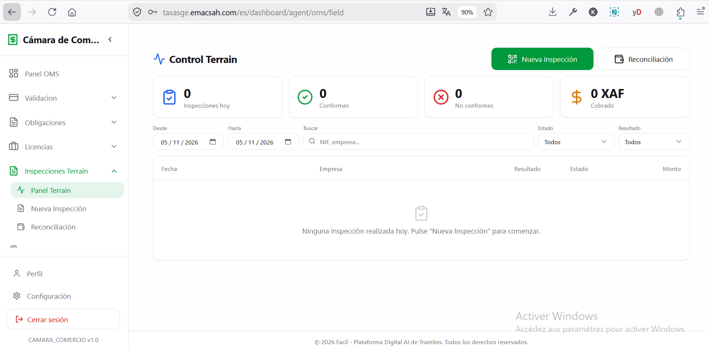
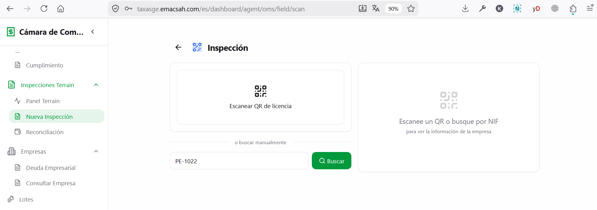
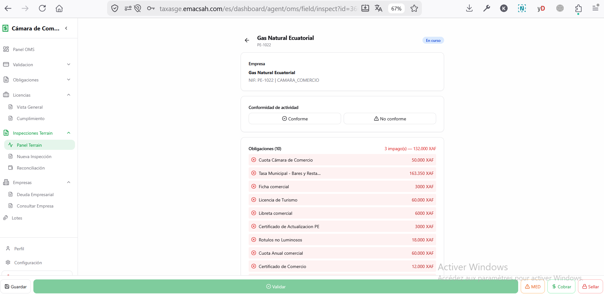
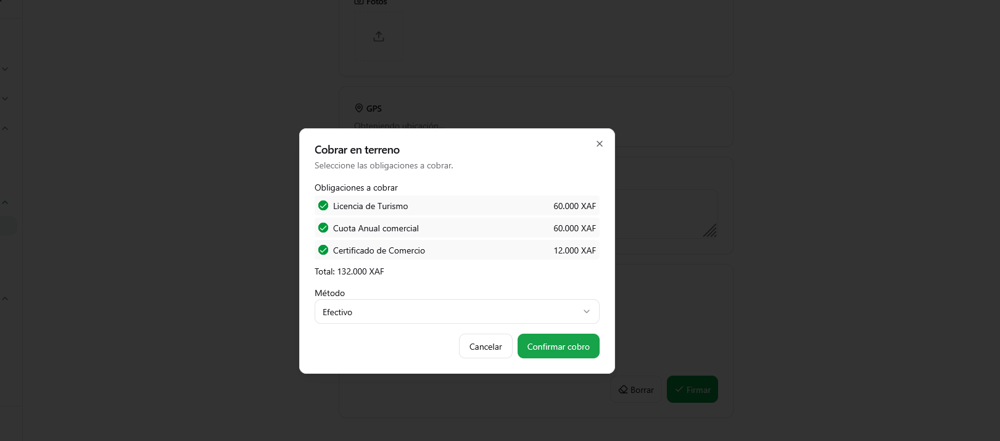
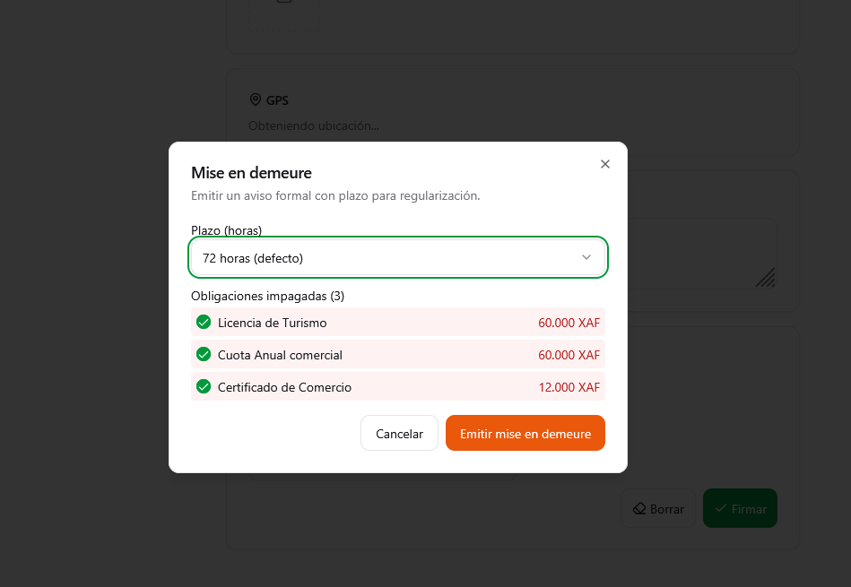
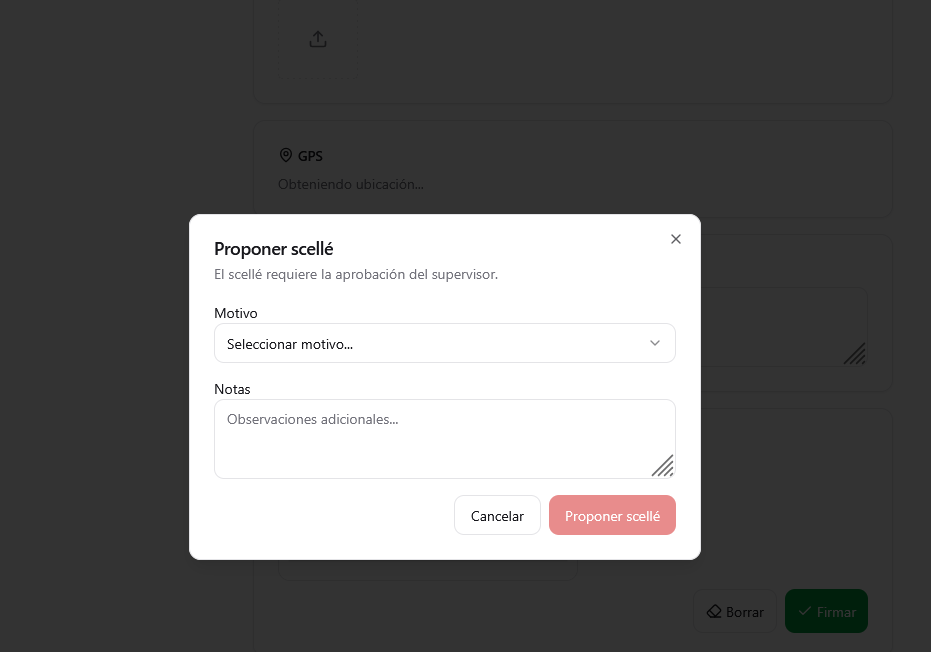
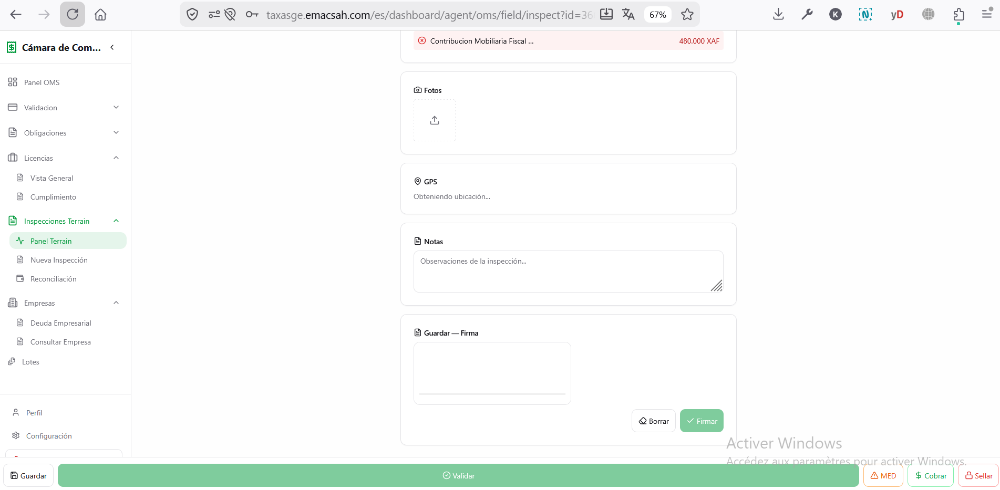

Trabajo terreno OMS: inspección comercial bundle + collection de paiements + flujo MED/scellement
Los agentes OMS realizan inspecciones comerciales en los establecimientos titulares de licencias bundle. El objetivo no es sanitario — es verificar que el comerciante está al día de sus obligaciones bundle (los 3 fee_types : tesoro, municipal, chamber) y eventualmente cobrar los pagos pendientes directamente en el terreno (Mobile Money via BANGE o cash). Para este trabajo terreno los agentes inspectors utilizan la app nativa @facil/inspector (Expo/React Native, paquete packages/inspector/) distinta de la app ciudadana @facil/mobile. La app inspector ofrece scan QR de licencia (expo-camera), checklist comercial, captura de fotos geo-etiquetadas (EXIF GPS), formulario MED + propuesta de scellement, firma SignaturePad horodatée con hash SHA-256. La implementación backend de la collection terrain está en packages/backend/app/modules/inspections/services/collection_service.py.
1. Preparación de la jornada (oficina, antes de salir)
Antes de salir, el agente prepara su jornada desde el back-office Web (ver página 66) :
- Selecciona los establecimientos a visitar (programación previa, ruta del día, o empresas con obligaciones vencidas detectadas por el sistema)
- Conecta la app inspector con sus credenciales (la clave MMKV de la app se genera aleatoriamente al primer uso y se almacena en el keychain del SO vía
expo-secure-store) - Verifica que la batería del terminal está al máximo (los días de inspección son largos)
- Verifica la conectividad antes de iniciar : la collection de pagos en terreno requiere red activa (no hay queue offline para cash en la versión actual)

2. Llegada al establecimiento: escaneo del QR de la licencia
Cada establecimiento titular de una licencia comercial bundle tiene su QR code único pegado en una pared visible. El agente abre la app Facil terreno y escanea este QR. La app abre directamente la ficha de inspección preparada con los datos del establecimiento: nombre comercial, NIF, historial bundle, obligaciones pendientes y sus importes, observaciones precedentes.
Si el QR está deteriorado o ausente
El agente puede buscar manualmente el establecimiento por NIF o por nombre comercial. La ausencia o ilegibilidad del QR en sí misma constituye una infracción registrable en el rapport de inspección.

Protección captura de pantalla (FLAG_SECURE)
La app inspector activa FLAG_SECURE (Android) y el equivalente iOS de forma global al lanzamiento : tomar una captura de pantalla o una grabación de vídeo mostrará una pantalla negra. Implementado vía el hook useScreenProtection en packages/inspector/src/core/security/use-screen-protection.ts, llamado en _layout.tsx del root. El hook utiliza expo-screen-capture con preventScreenCaptureAsync(). Razón : evitar la fuga de datos personales de los comerciantes (DIP, montantes obligaciones, fotos) si el teléfono del agente es comprometido o fotografiado a su insu.
3. Checklist comercial bundle
A diferencia de un control sanitario, la checklist OMS verifica la conformidad comercial y fiscal del establecimiento:
| N° | Punto a verificar | Criterio | Acción si fallo |
|---|---|---|---|
| 1 | Licencia comercial visible | QR pegado en pared accesible al público | Observación obligatoria en la ficha + foto. Si no aparece la licencia, escalación al supervisor o emisión MED. |
| 2 | Obligaciones Tesoro al día | No obligaciones fee_type=tesoro vencidas sin pagar | Collection inmediata Mobile Money o cash (requiere red) |
| 3 | Obligaciones Municipal al día | No obligaciones fee_type=municipal vencidas (tasas Ayuntamiento) | Collection inmediata o emisión MED |
| 4 | Obligaciones Chamber al día | Cuotas anuales Cámara fee_type=chamber al día | Collection o emisión MED |
| 5 | Actividad declarada = actividad real | El tipo de comercio observado in situ coincide con la categoría declarada en la licencia | Propuesta de scellement con razón activite_non_autorisee (sujeta a aprobación supervisor) |
| 6 | Registro mercantil válido | Empresa registrada en el registro Cámara, NIF activo | Escalación al supervisor para verificación |
| 7 | Obligación ministerial (fee_type=tesoro filtrada por ministry_id) | Impuesto sectorial específico imputado al ministerio competente al día | Notificación al agente ministerial (ver página 66 §9) |
El agente recorre la checklist marcando cada punto: conforme / no conforme / no aplicable. Para los no conforme, puede tomar fotos directamente desde la app (las fotos se geo-localizan automáticamente y se cifran).


4. Collection de obligaciones en el terreno
Si la inspección revela obligaciones bundle no pagadas, el agente puede cobrar inmediatamente en el lugar. La app calcula automáticamente el total a cobrar (suma de las obligaciones vencidas seleccionadas) y propone 2 métodos de pago — el endpoint backend es POST /inspections/{id}/collect-payment con campo method :
- Mobile Money (
method=mobile_money) — el agente captura el número de teléfono del comerciante (validación regex+240[0-9]{9}). La app envía solamente la método + número al backend ; la orquestación PIN SMS y la confirmación BANGE están gestionadas por el backend (no hay PIN local en la app inspector). Webhook BANGE confirma al backend cuando el pago llega. Solución preferida (trazabilidad total, sin manipulación de cash). - Cash (
method=cash) — el agente cobra el efectivo y registra el importe en la app. El pago se inserta enservice_paymentsconcollection_type='field'yworkflow_status='field_collected'. Atención : no hay impresión de recibo provisional en el sitio en la versión actual ; el recibo oficialREC-{año}-{6 dígitos}es generado por el backend tras la validación supervisor (ver §6 abajo y página 66 §6).
Conexión requerida para la collection
La app inspector bloquea explícitamente la collection cuando no hay red (useNetwork().isConnected en payment.tsx). No existe una queue offline para los pagos terrain en la versión actual : el agente debe esperar el restablecimiento de la conectividad antes de validar el cobro. La lectura de la ficha de inspección y la marca de la checklist sí funcionan en cache (React Query refetchOnReconnect=true resincroniza al volver la red).
Lock ordering canónico (CLAUDE.md)
La transacción backend de collection terrain sigue el lock ordering canónico para evitar deadlocks bajo carga (100+ agentes simultáneos) : commercial_licenses (FOR UPDATE — root lock) → service_requests (INSERT optimista vía partial UNIQUE index idx_sr_commercial_license_unique) → service_payments (INSERT con collection_type='field') → license_obligations (UPDATE batch a payment_pending). Timeouts transaction-scoped : SET LOCAL lock_timeout = '3s', SET LOCAL statement_timeout = '5s'. Implementación en CollectionService.collect_field_payment (app/modules/inspections/services/collection_service.py).

4 bis. Si obligaciones vencidas sin paiement: emitir MED (Mise en Demeure)
Si el comerciante refuse de payer o no tiene los fonds nécessaires, el agente emite una Mise en Demeure (MED) con un délai légal de 72h por défaut. Endpoint backend : POST /inspections/{id}/mise-en-demeure, permission inspection.mise_en_demeure. Una MED génère :
- Cambio de estado de la inspección :
in_progress→mise_en_demeure - Génération d'un PDF MED firmado oficialmente
- Upload Firebase Storage + registro en el vault de la empresa
- Email + push al owner de la empresa via EventBus
- Listado de las obligaciones señaladas (
mise_en_demeure_obligationsJSONB) - Deadline TIMESTAMPTZ stockée (
mise_en_demeure_deadline)

4 ter. Si la MED expire sin paiement: proponer scellement
72h après l'émission de la MED, si le commerçant n'a toujours pas réglé, l'agent peut proposer le scellement du commerce (POST /inspections/{id}/seal, permission inspection.seal_propose). Cette acción requiere validation supervisor — l'agent ne peut PAS sceller seul. Le backend vérifie automatiquement la condition « MED expirée » avant d'accepter la proposition (raison non_paiement_apres_med).
8 razones légales de scellement disponibles (enum SealReason) : non_paiement_apres_med, activite_non_autorisee, fraude_fiscale, faux_documents, refus_controle, non_conformite_grave, decision_judiciaire, ordre_ministeriel. Détail complet et workflow supervisor en página 74 §2-§3.

seal_proposed en espera de aprobación supervisor.4 quater. Finalizar la ficha y firmar (SignaturePad)
Una vez completadas todas las acciones (checklist, collection o MED, scellement eventual), el agente firma la ficha en la pantalla con el dedo y la finaliza. Implementación : composante signature-pad.tsx basado en react-native-signature-canvas (packages/inspector/src/modules/signature/). La firma se captura como PNG Base64, acompañada de un hash SHA-256 (tamper-detection, OWASP A08) y un timestamp ISO-8601 generado en el momento del trazo. No es una firma criptográfica X.509 — es una captura visual horodatada con hash de integridad. Endpoint backend : POST /inspections/{id}/complete.

5. Conectividad y comportamiento offline
La app inspector no implementa una queue offline para la collection de pagos terrain en la versión actual (el código de payment.tsx contiene un hard block si !isConnected). Las operaciones que sí funcionan en cache o degraded :
- Lectura de la ficha de inspección previamente cargada — desde el cache de React Query (
staleTime60s) - Marca de la checklist + notas — escritas en estado local, sincronizadas al volver la red
- Captura de fotos — almacenadas localmente con EXIF GPS, subidas a Firebase Storage al volver la red
- Scan QR de licencia — funciona offline (la cámara nativa decodifica localmente) ; la validación contra BD requiere red.
- Sincronización automática — React Query con
refetchOnReconnect=trueresincroniza las queries pendientes cuando la red vuelve
Almacenamiento local sensible : la app inspector utiliza MMKV con encryption nativa (no AES-256 explícita) y una clave hexadecimal de 32 caracteres generada aleatoriamente por dispositivo, almacenada en el keychain hardware-backed del SO vía expo-secure-store (ver packages/inspector/src/core/storage/mmkv.ts). Los tokens de autenticación se gestionan vía SecureStore directamente, no vía MMKV.
6. Reconciliación al regreso : validación supervisor
Una vez de vuelta al servicio, el flujo de validación del cobro terrain pasa obligatoriamente por el supervisor de la entidad. Cada pago insertado con collection_type='field' y workflow_status='field_collected' aparece en el dashboard de reconciliación del supervisor (página 73 para Ayuntamiento+Cámara, página 72 para Tesoro). El supervisor valida llamando POST /inspections/reconcile/supervisor/{payment_id}/validate (permiso inspection.reconcile_validate) ; este endpoint invoca entonces LicenseService.on_payment_completed() para enrutar las obligaciones al agente del fee_type correspondiente, y declenar la generación del recibo oficial REC-{año}-{6 dígitos}. No hay validación automática en la versión actual : el supervisor revisa cada pago individual.
7. Buenas prácticas terreno
- Llegar de improviso — para que el establecimiento no tenga tiempo de prepararse. Las inspecciones programadas con aviso pierden eficacia.
- Trabajar en pareja — un agente con el otro como testigo, sobre todo cuando hay collection cash, para evitar acusaciones de corrupción.
- Preferir Mobile Money — incluso si el comerciante propone cash, pedirle el Mobile Money primero (trazabilidad, BANGE webhook, sin manipulación física de efectivo).
- Verificar la conectividad antes de iniciar la collection — la app bloquea explícitamente el cobro si no hay red. Si la zona tiene mala cobertura, anotar las obligaciones a cobrar y volver con red activa para validar.
- Mantener carga el terminal — los días de inspección son largos. Una batería externa portátil evita perder horas de trabajo.
- Confirmar al supervisor — al regreso al servicio, asegurarse que cada pago cobrado en terreno (
field_collected) haya sido validado por el supervisor antes del cierre de la jornada. Sin esa validación, el recibo oficial no se emite y la obligación queda en limbo.